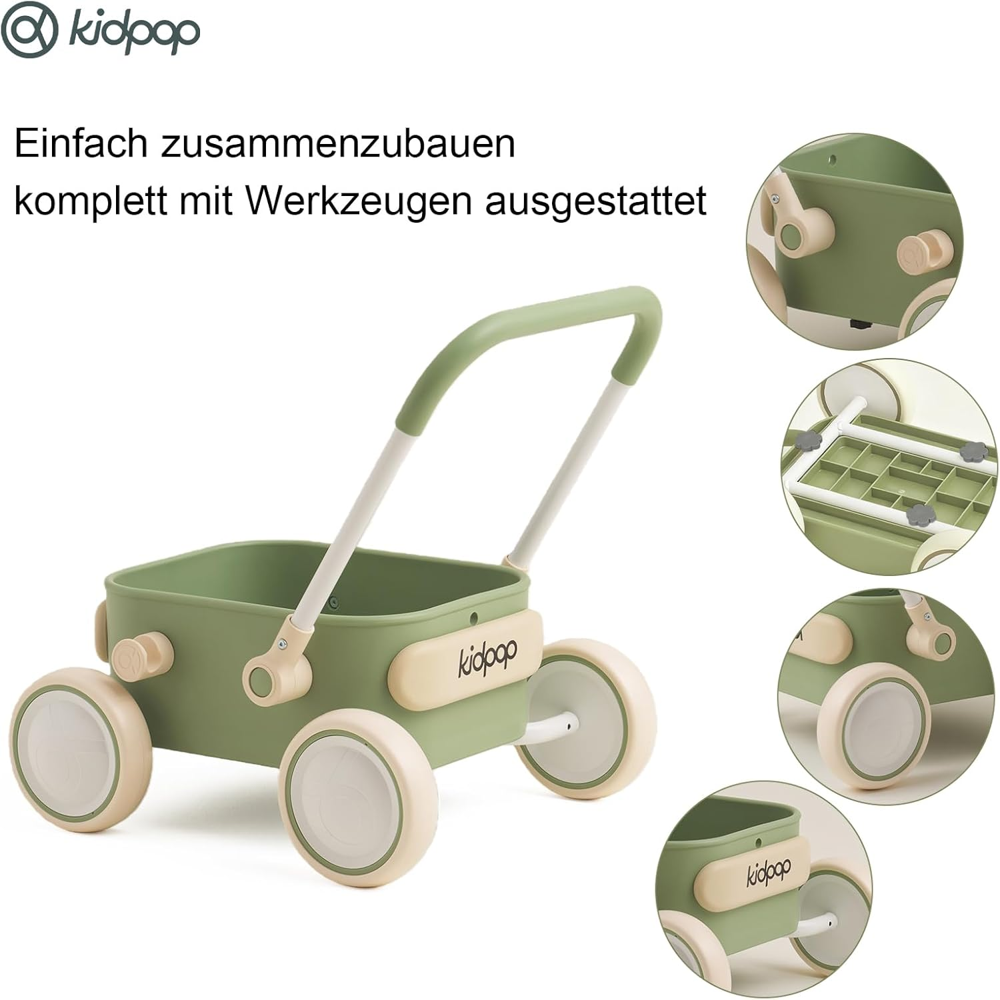

Schneller Geschenk-Tipp

Passt, wenn du ein sichtbares Hauptgeschenk zum Schieben und für erste Laufbewegungen suchst.
Alter, Sicherheit und Ausstattung des konkreten Modells bitte beim Händler prüfen. Bewertungsmethode.
Auch sinnvoll, wenn es besser passt

Wenn du schnell entscheiden willst: Kidpop PULA als Hauptgeschenk; Steckpuzzle oder Pappbilderbücher, wenn es kleiner oder ruhiger sein soll.
Inhaltsverzeichnis
Die 15 besten Geschenkideen zum 1. Geburtstag
Kidpop PULA 2-in-1 Schiebe- und Lauflernwagen
Die gezeigte Ausführung verbindet Schiebewagen und Lauflernwagen mit einem sichtbaren Stauraum. Amazon nennt zusätzlich eine faltbare Konstruktion und leise EVA-Räder. Farbe, Maße, Bremsmechanik, Material und Herstelleralter solltest du direkt beim Händler prüfen.
Amazon-Review-Snapshot, 21.07.2026: 4,7 von 5 Sternen bei 1.000 weltweiten Bewertungen. Die dortige KI-Zusammenfassung nennt überwiegend positive Rückmeldungen zu Stabilität, Qualität und Laufeigenschaften; einzelne Bewertungen empfinden den Preis als hoch. Kein eigener Produkttest – Werte können sich ändern.
- Schiebe- und Lauflernwagen in der gezeigten Ausführung
- Stauraum für kleine Spielsachen
- Material, Bremsmechanik und Herstelleralter prüfen
WINGYZ Musikinstrumente-Set

Ein mehrteiliges Instrumente-Set lädt zum Klopfen, Rasseln und gemeinsamen Musizieren ein. Wie lange es interessant bleibt, hängt vom Kind und vom konkreten Spielalltag ab – Lieferumfang, Lautstärke und Herstelleralter solltest du vor dem Kauf prüfen.
- Mehrere einfache Klang- und Greifmöglichkeiten
- Gemeinsames Musizieren ohne Batterien
- Lieferumfang, Lautstärke und Herstelleralter prüfen
Bauklötze aus Holz (großes Set)

Eines der zeitlosesten Spielzeuge überhaupt. Mit einem Jahr stapelt das Kind noch einfach – mit 3 Jahren baut es ganze Städte. Ein gutes Bauklötze-Set hält Jahrzehnte und kann an Geschwister weitergegeben werden.
- Lädt zum Stapeln, Bauen und Greifen ein
- Keine Batterien, kein Akku – einfach spielen
- Kann über mehrere Entwicklungsphasen interessant bleiben; Altersempfehlung prüfen
Ähnlich zeitlos und nach denselben Prinzipien entwickelt: Montessori Spielzeug für Kleinkinder – unser Ratgeber erklärt, worauf es bei der Auswahl ankommt.
Pappbilderbuch-Set „Meine ersten Wörter“
Ein Set mit ersten Tier- und Alltagswörtern lädt zum gemeinsamen Benennen, Zuhören und Blättern ein. Pappseiten sind für kleine Hände praktisch; konkrete Ausführung, Seitenstärke und Herstelleralter solltest du vor dem Kauf prüfen.
- Gemeinsames Benennen und Zuhören
- Mehrere kurze Bücher für kleine Einheiten
- Seitenstärke und Herstelleralter prüfen
Rutschauto / Bobby-Car

Ein Klassiker für Kinder, die sich mit den Beinen abstoßen und lenken möchten. Drinnen und draußen nutzbar; Platzbedarf, Herstelleralter und Nutzung unter Aufsicht vorher prüfen.
- Lädt zum Abstoßen, Lenken und Bewegen ein
- Drinnen und draußen nutzbar
- Für längere Nutzung gedacht; Herstelleralter und Belastbarkeit prüfen
Weitere tolle Ideen auf einen Blick:
- 6. Steckpuzzle aus Holz – erste Herausforderung zum Zuordnen von Formen und Farben; konkrete Teilegröße und Herstelleralter prüfen
- 7. Knetmasse – sensorisches Spiel und Kreativität; Inhaltsstoffe und Altersempfehlung des konkreten Produkts prüfen
- 8. Schaukelpferd / Schaukeltier – lädt zum Sitzen, Schieben und Bewegen ein; konkretes Herstelleralter und Aufsicht beachten
- 9. Wasserspielzeug / Badespielzeug – bringt eine spielerische Beschäftigung ins Bad; unser ausführlicher Ratgeber hilft bei der Auswahl
- 10. Fingerpuppensatz – ermöglicht gemeinsames Erzählen und Rollenspiel; konkretes Herstelleralter und Kleinteile prüfen
- 11. Sandkastenset – lädt zum Schaufeln und Sortieren ein; unter Aufsicht und mit passender Herstellerfreigabe nutzen
- 12. Dicke Wachsmalstifte – erste kreative Ausdrucksform; Herstellerangaben und Altersempfehlung des konkreten Sets prüfen
- 13. Wärmekissen für Kinder – kann als tröstendes Wärme-Accessoire gedacht sein; Anwendung, Temperatur und Altershinweise des Herstellers beachten
- 14. Fotoalbum mit personalisierten Seiten – emotionales Geschenk für die ganze Familie; hält Erinnerungen an das erste Jahr fest
- 15. Stapelbecher – zum Ineinanderstecken und Stapeln; konkrete Ausführung und Herstelleralter beim Händler prüfen
So vermeiden wir Geschenk-Fehlkäufe
- Wir prüfen, ob das Geschenk sofort nutzbar ist oder erst später relevant wird.
- Wir gewichten Alltagstauglichkeit: Platzbedarf, Lautstärke, Aufräumen und doppelte Geschenke.
- Wir bevorzugen Dinge, die Bewegung, Sprache, Greifen oder Nachahmen anregen.
Wenn das Kind in ein paar Monaten die nächste Entwicklungsstufe erreicht, lohnt sich ein Blick auf unseren Guide zu Spielzeug 12–18 Monate.
So wählst du Geschenke zum 1. Geburtstag aus
- Bedarf klären: Prüfe zuerst, welches Problem Geschenke zum 1. Geburtstag lösen soll: Alltag erleichtern, Entwicklung fördern, schenken, vergleichen oder einen Fehlkauf vermeiden.
- Alter und Entwicklungsstand prüfen: Wähle nur Empfehlungen, die zum Alter, zur Motorik, zur Sprache und zur Selbstständigkeit des Kindes passen.
- Sicherheit kontrollieren: Achte auf CE-Zeichen, stabile Verarbeitung, schadstoffarme Materialien und keine verschluckbaren Kleinteile bei Kindern unter drei Jahren.
- Alltagstauglichkeit bewerten: Prüfe, ob die Empfehlung zu Wohnung, Lautstärke, Reinigung, Stauraum und Aufsicht im Familienalltag passt.
- Qualität und Nutzungsdauer einschätzen: Bevorzuge Dinge, die robust sind, mehrere Monate interessant bleiben und auf verschiedene Arten genutzt werden können.
- Weniger gleichzeitig anbieten: Stelle nur wenige passende Dinge gleichzeitig bereit, weil zu viel Auswahl Kleinkinder schneller überfordert und die Spieltiefe reduziert.
Was passt zu einem Einjährigen?
Ein Kind mit einem Jahr steht an einer wichtigen Schwelle: Es beginnt zu laufen, entwickelt erste Worte, und entdeckt die Welt mit allen Sinnen. Das ideale Geschenk in dieser Phase:
- Fordert heraus, ohne zu überfordern
- Lässt sich auf verschiedene Arten nutzen
- Sollte stabil verarbeitet sein; Herstellerhinweise und mögliche Kleinteile prüfen
- Wächst im besten Fall mit dem Kind mit
Wie einzelne Spielzeugtypen gezielt Fähigkeiten fördern, zeigt unser Motorikspielzeug-Test für Kleinkinder.
Entwicklung mit 12 Monaten: Was das Kind gerade lernt
Wer weiß, was im Kopf und Körper eines Einjährigen gerade passiert, kauft automatisch bessere Geschenke. Ein paar Orientierungspunkte:
Motorik: Die meisten Kinder machen zwischen 10 und 15 Monaten ihre ersten freien Schritte. Ein Schiebewagen kann beim Üben zusätzliche Orientierung geben, ersetzt aber weder sichere Umgebung noch die Begleitung durch Erwachsene. Parallel dazu verfeinert sich die Feinmotorik: Das Kind kann Gegenstände zwischen Daumen und Zeigefinger greifen (Pinzettengriff) und beginnt, Dinge absichtlich zu stapeln, einzustecken und zu sortieren.
Sprache: Um den ersten Geburtstag herum erscheinen die ersten echten Wörter – typischerweise 1–3. Was viel stärker passiert: das rezeptive Verstehen. Kinder verstehen weit mehr als sie sagen können. Vorlesen und Benennen von Gegenständen hat in dieser Phase einen nachweislich großen Effekt auf die spätere Sprachentwicklung.
Kognition: Mit einem Jahr ist Objektpermanenz vollständig entwickelt – das Kind weiß, dass ein verstecktes Spielzeug noch existiert. Ursache-Wirkungs-Denken wächst rasant: "Wenn ich das schüttele, macht es Geräusch" ist eine echte Erkenntnis. Spielzeug, das direkt und vorhersehbar auf Handlungen reagiert, ist daher besonders befriedigend.
Sozial: Nachahmung ist der Lernmechanismus dieser Phase. Das Kind beobachtet Eltern beim Kochen, Telefonieren, Aufräumen – und ahmt nach. Einfaches Rollenspielzeug (kleine Töpfe, Spielzeugtelefon) greift genau das auf. Übrigens: Gemeinsames Spielen mit einem Erwachsenen ist für Einjährige deutlich wichtiger als das Spielzeug selbst.
Geschenke nach Budget
Nicht das teuerste Geschenk ist das beste – aber ein kleines Budget schränkt die Möglichkeiten ein. Hier ein schneller Überblick:
| Budget | Was passt | Unsere Empfehlungen |
|---|---|---|
| Unter 15 € | Kleine, hochwertige Ergänzung; ideal als Zusatzgeschenk | Pappbilderbuch, Steckpuzzle aus Holz, Knetmasse nach Herstelleralter |
| 15–35 € | Vollwertiges Geschenk mit echtem Spielwert | Bauklötze-Set, Musikinstrumente-Set, Badespielzeug-Set |
| 35–70 € | Das "Hauptgeschenk" – bleibt lange in Erinnerung | Bobby-Car, hochwertiger Lauflernwagen, Schaukelpferd |
| Über 70 € (Gruppengeschenk) | Mehrere Personen legen zusammen – für etwas wirklich Besonderes | Massivholz-Lauflernwagen (Premium), große Baustein-Kollektion, Sandkasten mit Set |
Tipp: Bei einem Gruppengeschenk lohnt es sich, eine Liste zu teilen – zu viele Gäste kaufen sonst unabgesprochen dasselbe. Ein Lauflernwagen kann als Gemeinschaftsgeschenk passen, wenn das Kind bereits sicher steht und genug Platz vorhanden ist. Für alle, die etwas Schönes mit kleinem Budget suchen: unsere Übersicht der besten Spielzeug-Ideen unter 20 Euro hilft weiter.
Was du besser vermeidest
- Spielzeug mit vielen Knöpfen und Lichtern: Solche Toys nennt man "closed-ended" – sie haben eine feste Funktion. Das Kind drückt Knopf, Licht blinkt, fertig. Das ist auf Dauer wenig fördernd.
- Zu kleine Teile: Beachte die Alters- und Warnhinweise des Herstellers und prüfe, ob sich kleine Teile lösen können. Selbst gebaute Größen-Tests ersetzen keine normgerechte Prüfung.
- Zu viel auf einmal: Viele Eltern berichten, dass ihr Kind am Geburtstag von der Menge überwältigt war. Weniger ist wirklich mehr.
- Plastik in schlechter Qualität: Billiges Plastik geht schnell kaputt, hat oft scharfe Bruchkanten, und enthält manchmal Schadstoffe. Lieber einmal mehr ausgeben für Qualität aus Holz oder geprüftem Kunststoff.
So haben wir ausgewählt
Redaktionell geprüft: Autor, Bewertungskriterien und Quellen sind offen verlinkt; Affiliate-Provisionen ändern die Reihenfolge nicht.
Mehr Geschenkideen: Die komplette Übersicht nach Anlass, Alter und Budget findest du unter Geschenke für Kleinkinder.
- Vorauswahl: Nur Spielzeug, das zum Alter, zur Alltagssituation und zu unseren Auswahlkriterien passt.
- Abgleich: Wir prüfen ausgewertete Eltern-Rezensionen, Sicherheitsangaben, Materialhinweise, Nutzungsdauer und typische Kritikpunkte gegeneinander.
- Transparenz: Empfehlungen sind redaktionelle Einordnungen und ersetzen keine Labor-, Schadstoff- oder Sicherheitsprüfung.
Quellen und Bewertungsgrundlage
- BIÖG/kindergesundheit-info: Spielen im Kleinkindalter – Grundlage für altersgerechtes Spiel zwischen 1 und 3 Jahren.
- BIÖG/kindergesundheit-info: Unfälle verhüten im Kleinkindalter – Sicherheitsrahmen für Kleinkind-Spielzeug.
- Europäische Kommission: Toy Safety in the EU – Referenz für CE-Kennzeichnung und Spielzeuganforderungen.
- Redaktionelle Einordnung: Bewertung nach unseren Auswahlkriterien und nach Muster aus Eltern-Rezensionen.
Häufige Fragen zum 1. Geburtstag
Was schenkt man einem Kind zum 1. Geburtstag?
Ein Lauflernwagen kann zu einem Kind passen, das sich bereits hochzieht; Bauklötze und Pappbilderbücher sind meist breiter einsetzbar. Entscheidend sind Entwicklungsstand, Altersfreigabe und stabile Verarbeitung – nicht Preis oder Menge.
Wie viel sollte ein Geschenk zum 1. Geburtstag kosten?
Zwischen 20 und 50 Euro kann für viele Gelegenheiten eine Orientierung sein. Wichtiger als der Preis sind passende Herstellerhinweise, keine verschluckbaren Kleinteile und ein nachvollziehbarer Spielwert.
Was sollte man zum 1. Geburtstag vermeiden?
Spielzeug mit kleinen Teilen (Schluckgefahr), günstiges Plastik in schlechter Qualität, und überladene Spielzeuge mit vielen Knöpfen. Auch zu viele Geschenke auf einmal können Kleinkinder überfordern.
Wann fängt Rollenspiel bei Kleinkindern an?
Erste Ansätze von Rollenspiel zeigen sich ab ca. 12–15 Monaten. Kinder ahmen dann nach, was sie bei Eltern sehen: kochen, telefonieren, aufräumen. Einfache Rollenspielsets unterstützen das gezielt.